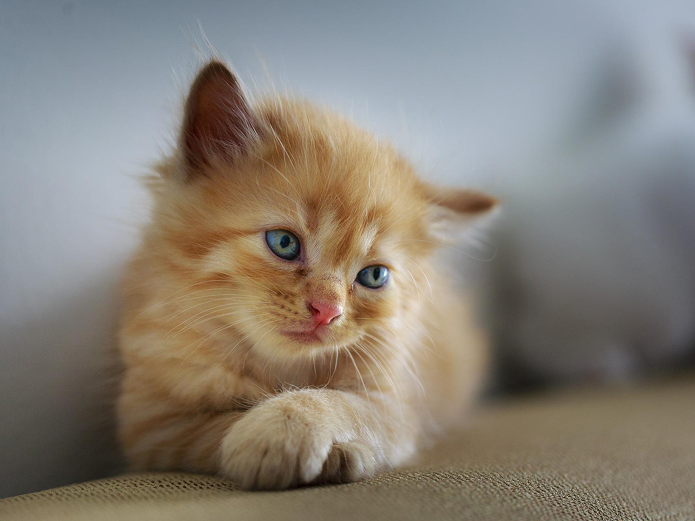
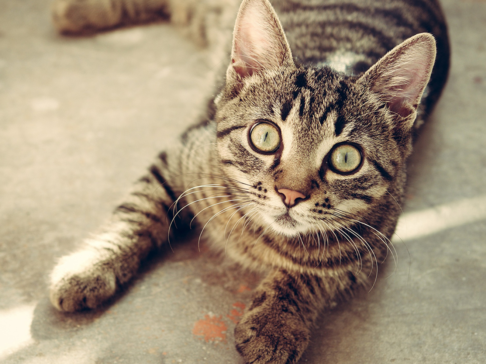
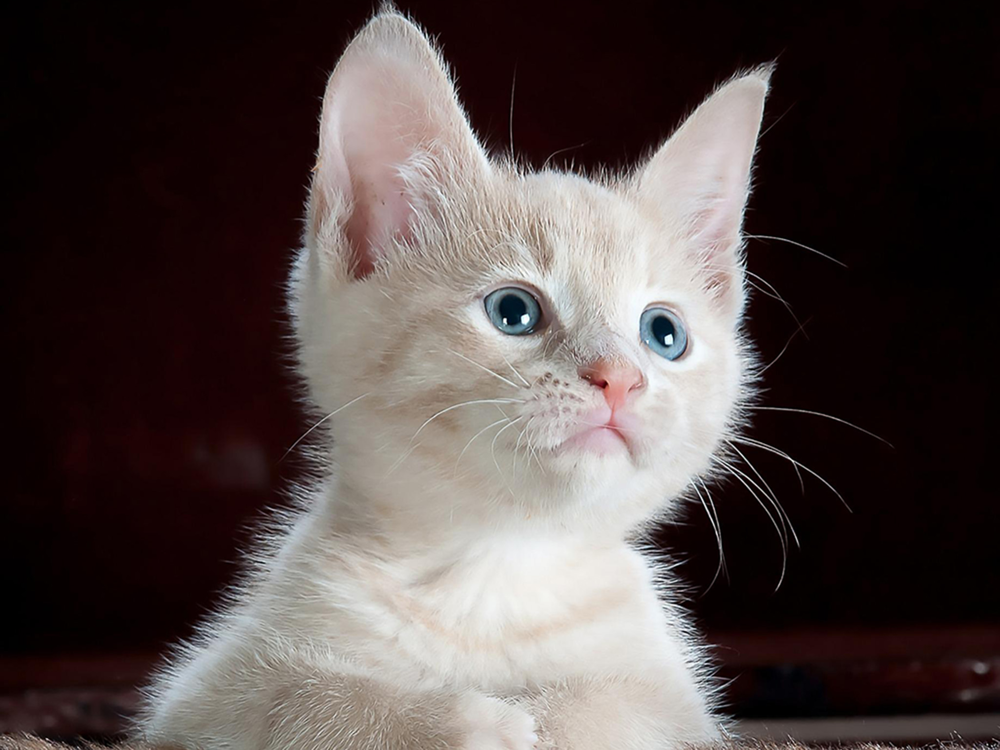
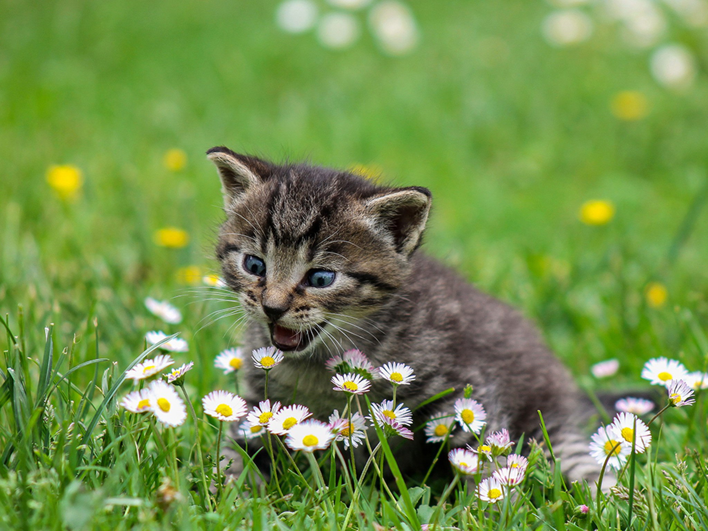
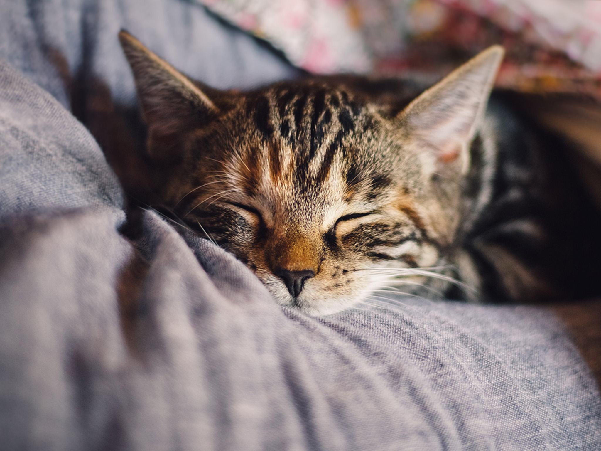
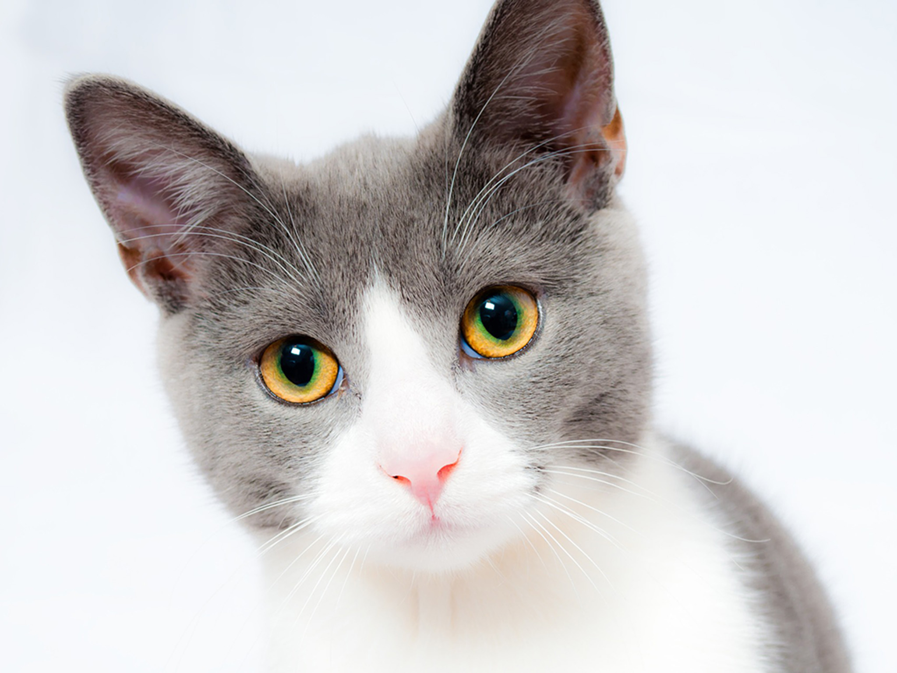
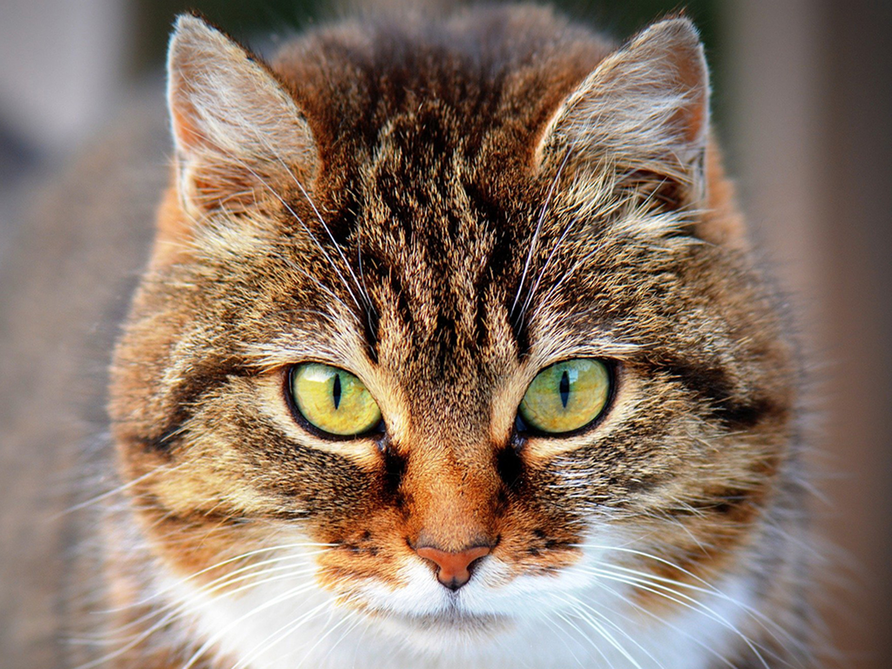
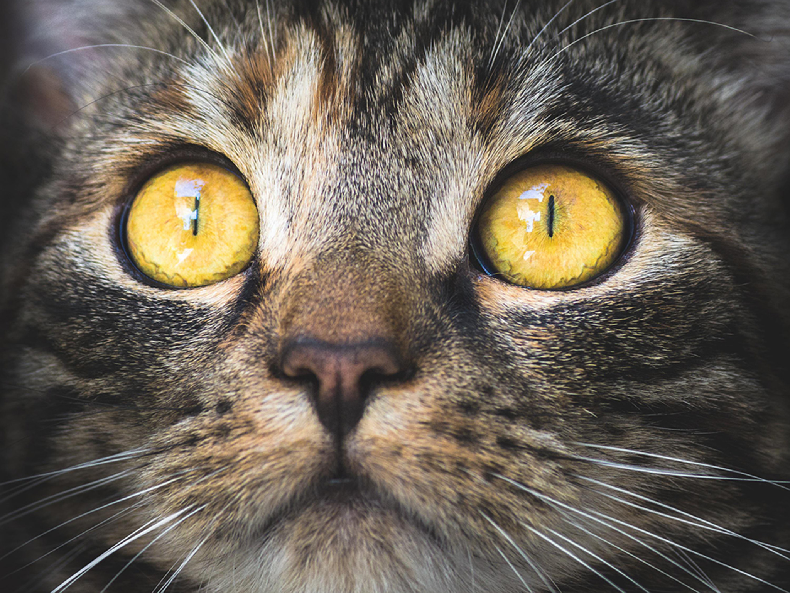
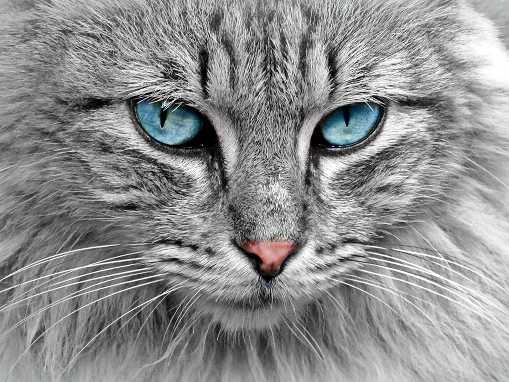
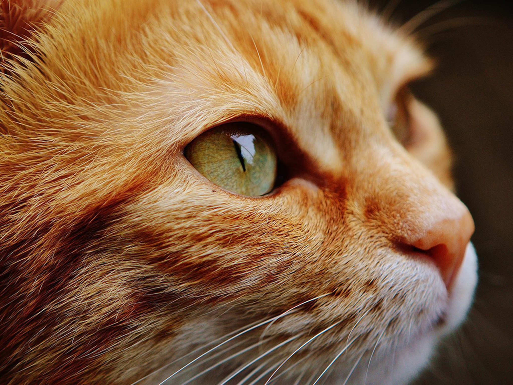

In ancient times cats were worshipped as gods; they have not forgotten this.
Pratchett

There are two means of refuge from the miseries of life: music and cats.
Albert Schweitzer

You can not look at a sleeping cat and feel tense.
Jane Pauley

How we behave toward cats here below determines our status in heaven.
Robert A. Heinlein

I’m not sure why I like cats so much. I mean, they’re really cute obviously. They are both wild and domestic at the same time.
Michael Showalter

A happy arrangement: many people prefer cats to other people, and many cats prefer people to other cats.
Mason Cooley

I love my cats more than I love most people. Probably more than is healthy.
Amy Lee

A kitten is the delight of a household. All day long a comedy is played out by an incomparable actor.
Champfleury

Heaven will never be Paradise unless my cats are there waiting for me.
Unknown

Cats know how to obtain food without labor, shelter without confinement, and love without penalties.
W. L. George